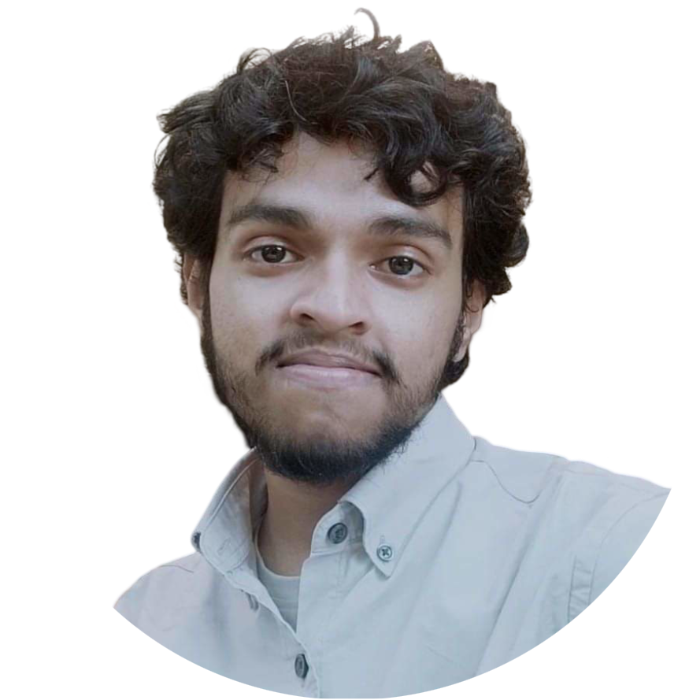
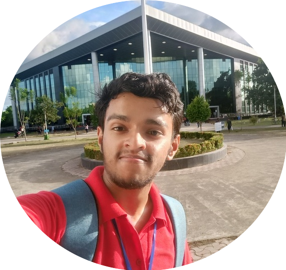

I am a PhD student in Astronomy at the University of Western Ontario, Canada, working with Dr. Jan Cami. I study evolved stars, from the AGB and post-AGB phases to planetary nebulae, and the circumstellar disks around them. My work combines molecular spectroscopy and radiative transfer modeling with molecular linelists to understand the small molecules and dust that form in these environments. Before Western, I completed my Integrated BS-MS in Physics at IISER Kolkata (2025), where I worked with Dr. Liton Majumdar on the chemistry of exoplanet atmospheres.

Institute: Indian Institute Of Science Education And Research Kolkata
Status: Completed
Courses Completed:
1. Computational Physics
2. Space Astronomy
3. Fluid and Magnetohydrodynamics
4. Nuclear Astrophysics
5. Introduction to Astronomy
6. Quantum Mechanics
7. Classical Mechanics
8. Special Theory of Relativity
9. Spectroscopy
10. Thermodynamics
This model computes the equilibrium chemical abundances in exoplanet atmospheres. It was my master's thesis work under the guidance of Dr. Liton Majumdar. The model is integrated into an in-house exoplanet retrieval code called NEXOTRANS. Our work has been accepted in The Astrophysical Journal ( click here).
Using the EDIBLES survey data with a high signal-to-noise ratio (S/N ∼ 1000) and high spectral resolution (resolving power R ∼ 80,000–110,000) from VLT-UVES, I concentrated on identifying Li/CH+/CN isotopes through Voigt profile fitting. Lithium’s abundance plays a key role in addressing the Big Bang Nucleosynthesis problem, yet its low abundance makes it challenging to detect. I identified lithium across multiple sight lines using both single and multi-cloud models and determined the isotopologue ratios from Voigt profile modeling. Throughout this work, we developed a Voigt-profile fitting code called AstroVoigtFit.
Clouds play a crucial role in the analysis of exoplanet atmospheres and habitability. However, cloud particles, with higher opacity compared to atmospheric gases, result in increased photon absorption and re-emission. This phenomenon leads to atmospheric heating and imposes limitations on telescopic observations, confining them to layers above the clouds. With this motivation, we are currently developing a cloud evolution model to aid in the analysis of exoplanet atmospheres. Click below to see the current status of this work.
This is an ongoing collaboration with the VaTEST team, where we are currently working on finding and characterizing sub-Neptunes. We mainly use juliet to model the light curves and TRICERATOPS to calculate false-positive probabilities (FPPs), along with other statistical tools. Click below to learn about the team's other work.
This group project was done during the NASA Sagan Summer Workshop 2023. The goal was to retrieve the atmospheric properties of WASP-77A b from JWST NIRSpec observations. We reproduced the results of August et al. (2023) by comparing the atmospheric [Fe/H] and C/O. We also carried out an "on-off" analysis at [Fe/H] = 1 and compared our P-T profile with the one in that paper. We presented this project at the workshop; click below to see the presentation.
Exoplanet Watch is a NASA citizen science project, sponsored by NASA's Universe of Learning, that lets anyone learn about planets that orbit stars beyond our solar system and get involved in observing them. Citizen scientists who are a part of this project will get access to FITS files from MicroObservatory, where they can generate lightcurves to find an exoplanet, or contribute to the existing ephemeris of an exoplanet.
In this paper, we delve into the deterministic and realistic interpretations of quantum mechanics, focusing on de Broglie–Bohm mechanics and pilot-wave hydrodynamics. The paper explores possible connections between the quantum and classical realms and sheds light on alternative ways of understanding quantum phenomena. Click below to read the paper.
The MITACS Globalink Research Internship (GRI) is a 12-week, fully funded research internship program in Canada for international students. As a part of this program, I got the opportunity to work with Dr. Jan Cami on the interstellar medium using EDIBLES survey data. I also had the chance to work with the group of Dr. Els Peeters on polycyclic aromatic hydrocarbons (PAHs) at the University of Western Ontario.
The workshop covered theoretical modeling, interpretation, and observations of exoplanets using a variety of telescopes, techniques, and hands-on exercises (the Eureka! and EXCALIBUR pipelines, forward modeling with PICASO, and retrievals with petitRADTRANS) presented by leading experts in the field. It was organised by the NASA Exoplanet Science Institute (NExScI), Caltech. Click here to see the recorded lectures. For more details, see the agenda.
This Open Data Workshop is the 6th in a series of workshops that began in 2018, run by the Gravitational Wave Open Science Center. It was a crash course in gravitational-wave data analysis, with lectures by data-analysis experts, noise-reduction techniques, and hands-on software tutorials. For more details, see the workshop page.
This 8-week summer school was organised by Fei Dai (Caltech) and Howard Isaacson (University of California, Berkeley). I gained hands-on experience analyzing Gaia and Kepler/TESS data, fitting transit light curves, and modeling with MCMC and PyMC3, among much else. Click below to learn more.
This 6-week conference was organised by IISER and the I-Hub Quantum Technology Foundation. I learned about theoretical aspects of quantum optics, quantum chemistry, quantum foundations, and quantum materials. It was a wonderful experience to see how quantum technologies are revolutionizing the modern era. For more details, see the conference page.
This was a 2-day astronomy image-analysis workshop. It covered many noise-reduction techniques for creating better images of astrophysical objects from satellite data.
Each year, a Science Exhibition is organized by the Department of Science and Technology (DST) in collaboration with the National Innovation Foundation – India (NIF). This competition consists of five levels, starting from the school level, then progressing to the district level, state level, and ultimately culminating at the national level. I had the privilege of participating in the national-level competition where I received a grant of 10,000 INR and obtained a patent for my proposal. Furthermore, I was invited to participate in Japan's Sakura Science Program at the international level. Click here to learn more about the INSPIRE Award MANAK.

Hi! I am actively working on building various astrophysical models (NEXOCHEM, AstroVoigtFit, XODIAC) to better understand our universe. Apart from that, I like playing badminton, chess, and the ukulele, spending time with friends, and, last but not least, teaching. If you have questions, are interested in a collaboration, or just want some chocolates :) please feel free to contact me via LinkedIn or email.